Kingstown/Chateaubelair Circuit


Churches
Kingstown
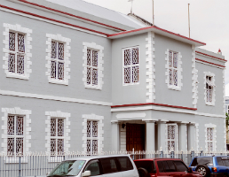Enterprise and resilience, coupled with an unwavering faith in God have been common characteristics prominent in St. Vincent’s early Methodists as they set out to establish permanent places of worship throughout the island from the 18th to mid-20th century. Nevertheless, what is now the Kingstown/Chateaubelair Circuit possibly first begun with the building of the Kingstown Chapel, spearheaded by the Rev. John Cullingford.
Before 1790, the early Kingstown Methodists met in a warehouse until a deserted Roman Catholic Church was bought. This served the early Methodists for about 50 years as Methodism continued to advance in the island.
Under Rev. John Cullingford, Methodists were able to put industry to use and build new walls around the old church walls so that services could continue to be held during construction.The new walls were constructed mostly by the labour of freed slaves and costed seven thousand pounds sterling. It was finally opened on the first of August, 1841, Emancipation Day.
Sadly, the work that Rev Cullingford begun, he could not finish as he subsequently transferred to Barbados and died soon after, in 1846. Rev Bannister then took up the mantle and aided, through various fund-raising efforts and monetary donations, in clearing the construction cost.
The Kingstown Chapel, however, continued in improvements, maintenance as it was only in 1861, the Rev. David Bartley pointed out that the roof was in a serious state of disrepair. In fact, as a meeting was held to discuss replacing the roof, rain fell and those gathered were forced to put up umbrellas within the church, confirming the minister’s observation. The roof was thereafter, replaced with slates, despite “some severe criticism.”
Again, under the tenure of Rev, Taylor, the chapel saw improvements. The present rostrum was installed to replace the two decker pulpit, the old box pews were replaced with the current pews and a glass chandelier was installed at the centre of the chapel.
The Kingstown Methodist Church, sadly, did not go untouched in the disastrous hurricane of 1898, an unfortunate setback for Methodists throughout St. Vincent. For Kingstown, this setback meant losing the majority of their roof, broken windows and the organ destroyed. Rev. James H. Darrell saw to the church’s repairs and the installation of the stained glass windows above the pulpit. The present Bevington pipe organ was installed in 1900 to replace the previous damaged organ. The Back Street porch with its railings were installed not long after.
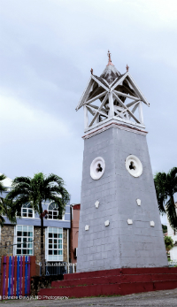Up until the year 1907, the church bell hung from a nearby breadfruit tree. The current belfry was built at this time, a gift from Ms. Jane Lucas, in whose memory a plaque is currently mounted within the church. The three crosses at the roof of the belfry symbolize the Holy Trinity and the Crucifixion of Jesus Christ.
The centenary anniversary of the Kingstown Chapel was welcomed with jubilance August 1st, 1941, promptly at 5:00am when the then Chairman and General Superintendent of Barbados, Trinidad and Guyana District, Rev. Dr. R.W. Charlesworth knocked on the front door which was opened by his wife. The congregation, following the minister, flooded the church as they sang “We love the place, O God.” A weeklong series of celebrations followed this service.
During the time of Rev. Vivian Commissiong, superintendent of the circuit from 1959 to 1966, the chapel was renovated extensively with the installation of a galvanized sheet roof and the replacement of the wooden floor with terrazzo.
The church’s most recent renovations, its most extensive to date, begun in August 2006, under the tenure of superintendent Rev. Victor Job. This restorative work included replacing the roof, pillars and chandelier following the pattern of construction 166 years before, all under the leadership of Guyanese contractor Craig Dey.
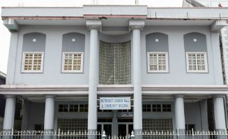During this time, services were conducted next door at the church hall, which was built under the superintendence of Rev. Cuthbert Edwards and officially opened 29th June, 2001. The Kingstown Methodist Church Hall is a popular event venue for meetings, conferences and other social gatherings for both government and other public uses.
The Kingstown Methodist Church, fully restored was finally re-dedicated on 28th October, 2007. Sunday Service begins at 7:00am. Its minister is Rev. Adolf Davis, superintendent of the circuit.
| Event | Date | Time |
|---|---|---|
| Worship | Every Sunday | 7 a.m. |
| Sunday School | Sundays | 3:00 p.m. |
| Bible Study | Tuesdays | 5:30 p.m. |
| Youth Fellowship | Fridays | 5:30 p.m. |
| Boy's Brigade | Thursdays | 4:30 p.m. |
Arnos Vale
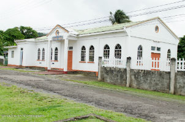Situated between the E.T Joshua Airport and the National Stadium, and about 10 minutes out of Kingstown, the quaint Arnos Vale Methodist Chapel holds one of the most vibrant, fervent congregations in the Kingstown/Chateaubelair Circuit.
Standing since August1962, discussions for an alternative place of worship began due to the arising problem of Vincentian Methodists having to travel from places such as Arnos Vale, Gomea and Calliaqua to Kingstown every Sunday. Among these Methodists were returning Vincentians from Curaçao and Aruba.
Mr. Moulton Williams, Accountant General and Circuit Lay Treasurer of the Methodist Church in the island at the time, discussed the problem with Rev Vivian Commissiong, the then Superintendent and Ms. Carmen Jack, junior officer at the Treasury Department. The suggestion of cottage meetings was made which eventually led to members such as Sis. Gertrude and Rhona Williams, as well as Bro. Herman Glasgow offering their homes. Bro. Carlton Cropper later assisted by offering his block factory for worship services.
Nevertheless, space eventually became insufficient as membership grew and plans to erect a new church building begun. After receiving land on which the current chapel stands from the government, members, with faith and fervency still evident among the congregation today, came together to raise funds, donate money and transport lumber, sand, cement, blocks etc. for their new church. Possibly, the most notable donation, however, came from the Walker family- a sum of $9,000.00. A plaque hangs in the church today in their memory.
All are welcome to worship which begins at 9:00am every Sunday, with Rev. Adolf Davis, Superintendent, as pastor. Here, one can be sure to be warmly welcomed by the members, and greeted by the rich voices of the Senior and Junior choirs.
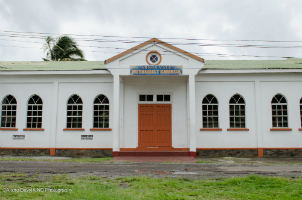| Event | Date | Time |
|---|---|---|
| Worship | Every Sunday | 9 a.m. |
| Sunday School | Sundays | 3:00 p.m. |
| Bible Study | Tuesdays | 7 p.m. |
| Youth Fellowship | 2nd and 4th Sundays | 4:30 p.m. |
Calliaqua
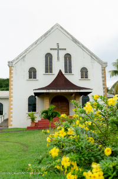The lofty structure of the current Calliaqua Methodist Church at the seaside town of Calliaqua, can trace its congregation’s origin to about the start of the 20th century. At this time, the structure was more humble in appearance, wooden, on concrete columns.
As was the case for Methodist congregations throughout the island, Calliaqua soon saw that this structure was unable to meet the size of a growing congregation, which hailed at the time, from the villages of Arnos Vale, Calliaqua, Choppins, Ratho Mill, Villa and Fairhall. Plans for a new, larger structure were commissioned and on the 15th April, 1984, the new chapel was dedicated.
In the year 1984 the membership stood at 98, however, within ten years this number had almost doubled with a total membership of 175 persons. Once again the need for a new chapel was recognized. In January, 1994, a ground-breaking ceremony was held and under the pastoral leadership of Rev. Cuthbert Edwards, a new chapel was erected and rededicated exactly one year later on Sunday 8th January, 1995 by Rev. William Watty, President of the MCCA Conference.
The congregation of Calliaqua is unique to its counterparts within the circuit. It is within this congregation, that the only handchime choir in St. Vincent and the Grenadines is found. It also has a large and vibrant women’s league, an active Sunday school, youth group and young adult group.
Sunday services begin at 7:00am and the minister in-charge is the Rev. Adolf Davis, Superintendent of the circuit.
| Event | Date | Time |
|---|---|---|
| Worship | Every Sunday | 7 a.m. |
| Sunday School | Sundays | 3:00 p.m. |
| Bible Study | Mondays | 6:30 p.m. |
| Boys' Brigade | Wednesday | 5 p.m. |
| Young Adults | Every Other Wednesday | 7:30 p.m. |
| Girls' Brigade | Friday | 4:30 p.m. |
| Youth Fellowship | Saturdays | 4:30 p.m. |
| Chime Choir | Saturdays | 6:30 p.m. |
| Junior Chime Choir | Every Other Saturday | 4 p.m. |
Sion Hill
The Sion Hill Methodist Mission was formed in the late 1970s after the building was donated to the Methodist church, following the death of its former owner, Ms. Christina Fleming, a member of the Kingstown Methodist congregation. Thereafter, Rev. Colin Membery, the superintendent at the time, began to hold worship services in the building for the benefit of members of Kingstown who lived nearby.

With the success of the mission, it was not long before a Sunday School was started around 1980 by Mrs. Eileen Bailey, a member of the Kingstown congregation and lived at Sion Hill. A woman’s league was in 1984 consisting of members of the Kingstown Women’s League residents of Sion Hill, Roseau and Mala Village. Their leader was the late Sis. Iris King who also served as a local preacher and class leader.
Sion Hill Methodist Mission is now under the pastoral leadership of Rev. C. Stilson Cato. Worship begins 9:00am.
| Event | Date | Time |
|---|---|---|
| Worship | Every Sunday | 9 a.m. |
| Sunday School | Sundays | (Not functionally present) |
| Bible Study | Wednesday | 4:30 p.m. |
| Youth Fellowship | Fridays | 5:30 p.m. |
Gomea
The Gomea Wesleyan Methodist Chapel/School was built after the destruction of the infamous 1898 hurricane. The school-chapel was built on lands bought from the Belair Estate with congregational members from neighbouring areas such as Evesham, Belmont, Fountain, Dauphine, Dorsetshire Hill, Welcome, Ashburton and Pilgrim Hill.
The school-chapel continued to be maintained over the years to accommodate the growing congregation as well as the increasing demands of the school; but by 1972, the government had undertaken the decision to build a completely new school on the newly purchased lands of the Dauphine Estate. As a result, the original school-chapel was renovated to become the present Gomea Methodist Church, with the eventual additions of a pre-school, spaces for sewing and handicraft and other types of community education.
Gomea Methodist Church is sited to be less than seventy-five yards from the The Spa, a popular tourist attraction. Church Service at Gomea begins at 11:00am where one can often be greeted with the inspiring songs of the upbeat, talented voices of their senior and junior choirs and accompanying musicians. The minister in-charge in charge is Rev. C. Stilson Cato.
| Event | Date | Time |
|---|---|---|
| Worship | Every Sunday | 11 a.m. |
| Sunday School | Sundays(Not functionally present) | Immediately after Worship |
| Bible Study | Mondays | 6 p.m. |
| Youth Fellowship | Saturdays | 5 p.m. |
Brighton
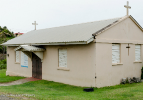Perched on a small hill in the picturesque Southern village of Brighton, this Methodist chapel building, eventually came out of the unfortunate situation of an 1898 hurricane which destroyed the village’s school building.
The school was under the management of the Methodist Church and was also used for Sunday worship among the Methodists living nearby. When the school was rebuilt between 1899 and 1900, it was renamed the Brighton Methodist School and served as a school-chapel for some time.
The chapel finally came to completion in 1965 and has played a significant role in the development of the village such as the founding of the cemetery to serve the village.
The church is currently in the process of rebuilding a modern structure 99ft by 40ft. Worship begins at 9:00 am on Sundays. The pastor in charge is Rev. C. Stilson Cato.
| Event | Date | Time |
|---|---|---|
| Worship | Every Sunday | 9 a.m. |
| Sunday School | Sundays(Not functionally present) | 3 p.m. |
| Bible Study | Tuesdays | 6 p.m. |
| Youth Fellowship | Thursday | 5 p.m. |
Chauncey
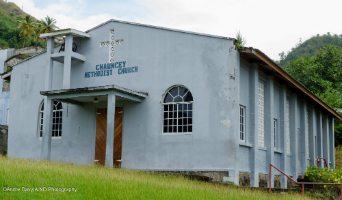Duis tempus leo vitae ipsum viverra, blandit condimentum sapien porttitor. Duis porttitor sed metus eget mollis. Curabitur bibendum imperdiet tortor, ut pulvinar purus elementum nec. Duis mollis, est non commodo luctus, nisi erat porttitor ligula, eget lacinia odio sem nec elit. Cras mattis consectetur purus sit amet fermentum. Fusce dapibus, tellus ac cursus commodo, tortor mauris condimentum nibh.
Duis tempus leo vitae ipsum viverra, blandit condimentum sapien porttitor. Duis porttitor sed metus eget mollis. Curabitur bibendum imperdiet tortor, ut pulvinar purus elementum nec. Duis mollis, est non commodo luctus, nisi erat porttitor ligula, eget lacinia odio sem nec elit. Cras mattis consectetur purus sit amet fermentum. Fusce dapibus, tellus ac cursus commodo, tortor mauris condimentum nibh.
| Event | Date | Time |
|---|---|---|
| Worship | Every Sunday | 9 a.m. |
| Sunday School | Sundays | 11 a.m. |
| Bible Study | Wednesday | 6 p.m. |
| Youth Fellowship | Friday | 6 p.m. |
Campden Park
The Campden Park Methodist Church, as with many other churches in the circuit, began through a desire to cater to a group of Methodists living in the area who experienced difficulty traveling to Kingstown every Sunday. The initiative was made by Rev. Dillon Burgin after conducting a survey to ascertain the number of Methodists living within the Campden Park/ Lowmans area of the island on October 2nd, 1995.
Following the results of his survey, Rev. Burgin began a daily house visitation programme for prospective members and soon transportation by an eighteen-seat bus was provided for weekly worship in Kingstown.
Rev. Burgin’s initiative flourished and within the following year, weekly Bible Study sessions were being held at the Lowmans Leeward Anglican School. For the children, the “After-School Club” was formed where along with some Bible Study, composed poems and performed drama. A congregation was therefore formed and the first Sunday Worship was held on March 3rd, 1996 at the Lowmans Leeward Anglican School with 28 in attendance, 18 adults and 10 children.
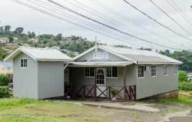With a fire that can only be ignited by the movement of the Holy Spirit, the youth at the time led in the increase of the congregations’ membership between the period of September and November 1996 by conducting house visitations in their “Young People in Mission” efforts. This passion continued with three open air evangelical services, held in March 1997 resulting in three persons committing their lives to Christ.
Sunday School also benefited from the open air services, taught in a store room by Rev. and Mrs. Burgin and rose from 11 attendees to 20. Under the advice of the Rev. Dr. Cuthbert Edwards, Superintendent Minister at the time, Sunday Worship was soon transferred to this store room owned by Mr. and Mrs. Brenon Phillips, members of the congregation.
Finally at the 2000 District Conference, held in Barbados, the mission was accepted as a church. Service is conducted every Sunday at 9:00am, under the pastoral care of Rev. Benjamin Gorman.
| Event | Date | Time |
|---|---|---|
| Worship | Every Sunday | 9 a.m. |
| Sunday School | Sundays | (Not functional) |
| Bible Study | Monday | 5 p.m. |
| Youth Fellowship | Thursday | 5 p.m. |
Hope
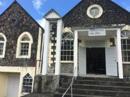The original Hope Methodist chapel was destroyed by the hurricane of 1898, like many other Methodist properties at the time. It was located where the Vermont police station is at present, near the Hope Bridge. The chapel at the time, had been constructed of timber, most of which was found in the Buccament river after the hurricane.
In the wake of the hurricane’s destruction, a new parcel of land, adjoining the Buccament Government School was donated to the Church by Mr. John Punnett, a prominent farmer of the area. A new timber structure was erected on the land and the building occasionally served as an annex to the school, before and even after the Second World War.
However, not too long after the end of the Second World War, it was found that the structure was unsafe for use. Commencing in 1949, a new chapel, was built in its place while church services and other activities were held at the school. This new chapel was built with walls eighteen inches thick so that it would be able to withstand the powerful winds of a hurricane. The new chapel was completed in 1951. Land for burial grounds was later donated by Mr. Langley Punnett, son of John Punnett.
Sunday Service begins at 11:00 am.
| Event | Date | Time |
|---|---|---|
| Worship | Every Sunday | 11 a.m. |
| Sunday School | Sundays | 10:00 a.m. - 11:00 a.m. |
| Bible Study | Mondays | 5:30 p.m. |
| Youth Fellowship | Thursday | (Not Functional) |
Congregational Stewards
Sis. Elisha Browne
Sis. Monah Gould
Sis. Karen Abbott
Layou
The beginnings of the Layou Methodist Church should be owed to a woman by the name of Harriet Gardner, born a slave in the island of St. Kitts. Ms. Gardner migrated to St. Vincent as a child and settled in the Leeward village of Layou.
Upon hearing a perhaps, moving sermon by a Rev. Riley of Barrouallie, around the year 1815, Ms. Gardner committed her life to Christ. It was not long before she recognised that a place of worship was needed in the village and offered her home. Ms. Gardner housed many nightly services and soon, the gospel reached the ears of many other villagers in Layou. A society was formed within months.
The society, unfortunately was badly affected when cholera hit the village and many members and leaders died. Nevertheless, work continued in the village and the society was quickly reformed. Harriet Gardner was soon forced to remove a partition of her house to expand the place of gathering.
In 1831, a hurricane hit the island and once again, the village was negatively affected when many houses, included Ms. Gardner’s was destroyed. After that, it was impossible to find a large enough place to hold a congregation of two hundred. The decision was made to construct a new chapel. It was dedicated in 1839.
The church and the school have been closely linked in the early days of Methodism of many neighbouring villages. Layou was no exception and a day school was conducted in the chapel. The wooden chapel lasted until 1898 when sadly, another hurricane hit the island. Reconstruction began around 1904 for a new chapel on a site overlooking the Layou harbour. The chapel was finished in 1906.The chapel’s location helped whenever a minister had to travel, often by row boat, to the village. A lookout was placed at Layou Point so that the bell could immediately be rung to signal the minister’s arrival.
Methodism in St Vincent and the question of a place of worship has been problematic over the years, but thankfully the 1906 chapel of Layou has stood the test of time and continues to serve the present congregation. Sunday services begin at 7:00am.
Congregational Stewards
Sis. Edna McDowell-Jones
Sis. Stella Quow
Sis. Hayden Robertson
| Event | Date | Time |
|---|---|---|
| Worship | Every Sunday | 7 a.m. |
| Sunday School | Sundays (Not functional) | 3:00 p.m. |
| Bible Study | Tuesdays | 7:00 p.m. |
| Youth Fellowship | Thursday(Not Functional) | 7:00 p.m |
| Children's Fellowship | Wednesday | 5:00 p.m. |
Barouallie
| Event | Date | Time |
|---|---|---|
| Worship | Every Sunday | 9 a.m. |
| Sunday School | Sundays (Not functional) | 3:00 p.m. |
| Bible Study | Mondays | 4:30 p.m. |
| Youth Fellowship | Fridays | (Not Functional) |
| Women's League | 2nd & 4th Wednesdays | N/A |
Spring
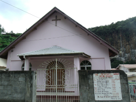Methodism in the Spring Village valley began when in 1904, Rev. Huckerby bought the site on which the present Spring Village Methodist Church stands. A society hall was soon erected on the site by a co-operative body and served for worship as well as a primary school. The building was eventually upgraded to stone.
Unfortunately, the membership of the society remained small with the congregation being divided into two classes. However, additions were made to the building in 1943, forming a T-shaped building.
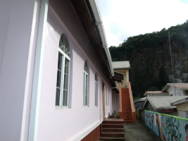In 1996, under the tenure of Rev. Dr. Cuthbert Edwards as superintendent minister, a new structure, chapel and hall combined, replaced the old chapel. This was done with the help of three work teams from Pennsylvania, U.S.A. between the months of January to March, 1996. The new structure was dedicated November 14th, 1999.
The building still continues to serve as a pre-school, while Sunday service is conducted in the chapel at 11:00 am.
Congregational Stewards
Sis. Gladys Millington
Sis. Velma Stephens
| Event | Date | Time |
|---|---|---|
| Worship | Every Sunday | 11 a.m. |
| Sunday School | Sundays | 3:00 p.m. |
| Bible Study | Thursdays | 7:00 p.m. |
| Youth Fellowship | Fridays | 6:30 p.m |
Westwood
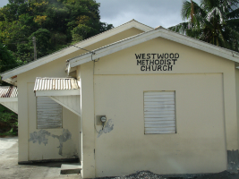The current Westwood Methodist Church essentially begun as the Westwood Methodist Society in the 1940s where members conducted worship under a wooden structure, which also served as an elementary school in the village.
As Methodism continued to grow on the Leeward side, membership which initially consisted of two families, expanded as well. The fate of the society, however, took a downturn in the 1950s when a lack of leadership led to temporary closure. Thankfully, the problem was soon resolved and church activities resumed as usual.
It was not until 1987 that members resolved to build a permanent structure when a storm damaged the wooden building beyond repair the year before. The new building was dedicated on the 24th of May, 1988 under the Chairmanship of Rev. W. Watty. Sunday Worship is conducted at 9:00am.
| Event | Date | Time |
|---|---|---|
| Worship | Every Sunday | 9 a.m. |
| Sunday School | Sundays | 3:30 p.m. |
| Bible Study | Thursdays | 3:00 p.m. |
| Youth Fellowship | Saturdays | 5:00 p.m |
Congregational Stewards
Sis. Vivienne Charles
Sis. Camelia Scarboro
Rose Hall
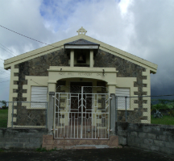With the establishment of Methodism in the neighbouring villages on the Leeward side of the island such as Chateaubelair, it was not long before villages like Rose Hall realized their own Methodist mission for worship.
Members of the Rose Hall congregation held worship in rented properties until1958, under the superintendence of Rev. Desmond G. Mason, when they built their first chapel. The church was finally dedicated in 1959.
Though the congregation is small in size, Rose Hall Methodist Church boasts of some of the most enthusiastic youth in the circuit. Sunday Worship occurs at 11:00am.
| Event | Date | Time |
|---|---|---|
| Worship | Every Sunday | 11 a.m. |
| Sunday School | Sundays | 10 a.m. |
| Bible Study | Wednesdays | 3:00 p.m. |
| Youth Fellowship | Saturdays | 5:30 p.m |
Congregational Stewards
Bro. Harris Stapelton
Bro. Clifton Samuel
Troumaca
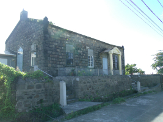The first congregation of the Troumaca Methodist Church comprised of mostly farmers, peasant workers and their children. They worshipped under a small wooden structure provided by a Providence family. Naturally, with the spread and progress of Methodism throughout the Leeward end of the island, a new place of worship had to eventually be located.
The Troumaca Primary School was then identified as a potential place for worship; permission was sought and granted. In an aim to further the church’s work in the community, a bell was donated by Sis. Elvira Parsons of Curacao for school and church use. A bell tower was thereafter, built at the southern end of the school park.
The current church was built in 1938 and though the current membership is small, the Sunday School as well as summer vacation programmes, serve to bring children from all over the village, regardless of denomination, to participate in pursuing biblical and Christian knowledge. Sunday services begin at 11:00am.
| Event | Date | Time |
|---|---|---|
| Worship | Every Sunday | 9 a.m. |
| Sunday School | Sundays | 11 a.m. |
| Bible Study | Thursdays | 5:00 p.m. |
| Youth Fellowship | Saturdays | 5:00 p.m |
Congregational Stewards
Sis. Esther Providence-Burke
Margaret Providence
Chateaubelair
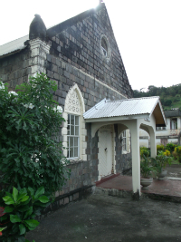The Chateaubelair Methodist Church was born out of a time when the Methodist Church moved as the most vibrant arm of the Christian church in the north Leeward end of the country, in the earlier parts of the twentieth century. In an interesting addition, the Spiritual Baptists or “Shakers” as they are commonly called, have also been noted for their contributing vibrant ‘flair’ and the subsequent hold of Methodism in the village of Chateaubelair.
All the same, its leaders had long to travel in often difficult weather conditions by foot, donkey, trap or buggy or by an open rowboat in the sea to maintain the weekly congregational activities. In the times lay preachers or the parson were unable to attend, prayer meetings were held often with the beloved opening hymn “And Are We Yet Alive.” No class meeting was held without singing “This, This Is the God We Adore.”
The infamous hurricane of 1898 destroyed the first Chateaubelair Methodist chapel and a large wooden structure was built to serve as a chapel and a school. This became the first church-primary school in the island and possibly begun the inimitable relationship between the Methodist church and primary schools in the island. The wooden structure was used for worship until 1923 when under the leadership of the Rev. Hugh Cockburn Payne, the present church was built and dedicated. The old wooden building is still used by the community to this day.

In those days, ecumenism, unity among God’s people was frequently observed, with lunches often provided at the home of the sexton for leaders and participants of the church. Moreover, headmasters, beginning with the first headmaster H.E.A Daisley Sr. of the neighbouring new school also lent ungrudging assistance to the church, often occupying the pulpit on Sundays. The headmasters also officiated funerals in the pastor’s absence.
Membership grew significantly in the 1920s and 1930s when Mr. Daisley, Mr. John Henry Collymore and his son Moulton Collymore who organized the start of the church choir. Though the numbers are not as they were in the early twentieth century, worship at the Chateaubelair Methodist Church is still significantly characterised by their penchant for singing to the glory of God. Sunday worship begins early, at 7:00am.
| Event | Date | Time |
|---|---|---|
| Worship | Every Sunday | 7 a.m. |
| Sunday School | Sundays | 9 a.m. |
| Bible Study | Thursdays | 6:30 p.m. |
| Youth Fellowship | Saturdays | 5:00 p.m |
Congregational Stewards
Sis. Joenetta Ellis
Bro. Noel Patterson
Sis. Dora James
REFERENCES
The Methodist Church in the Caribbean and the Americas (2009). Notes on the Kingstown Chateaubelair Circuit. [Publication] Kingstown, St. Vincent & the Grenadines: Galaxy Print Ltd.
Calliaqua: Our History (n.d). Retrieved from http://kingchat-south.org/pages/calliaqua-history.html"